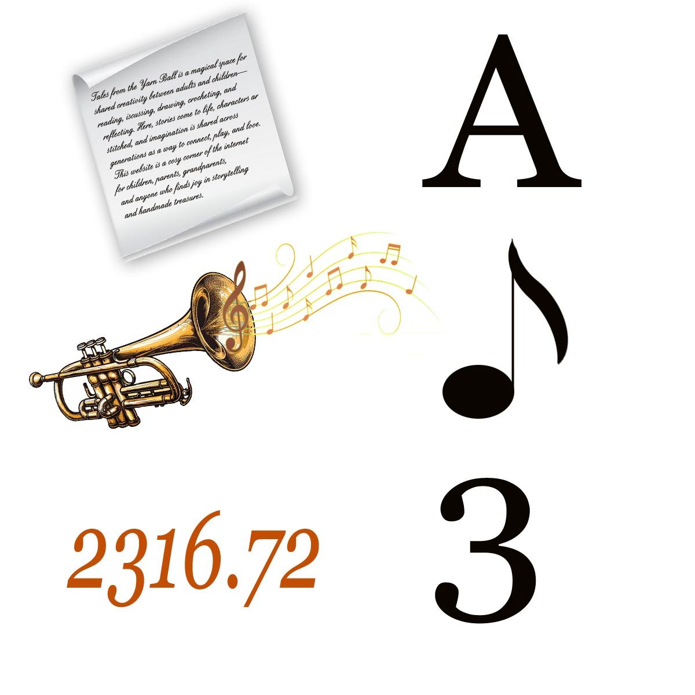
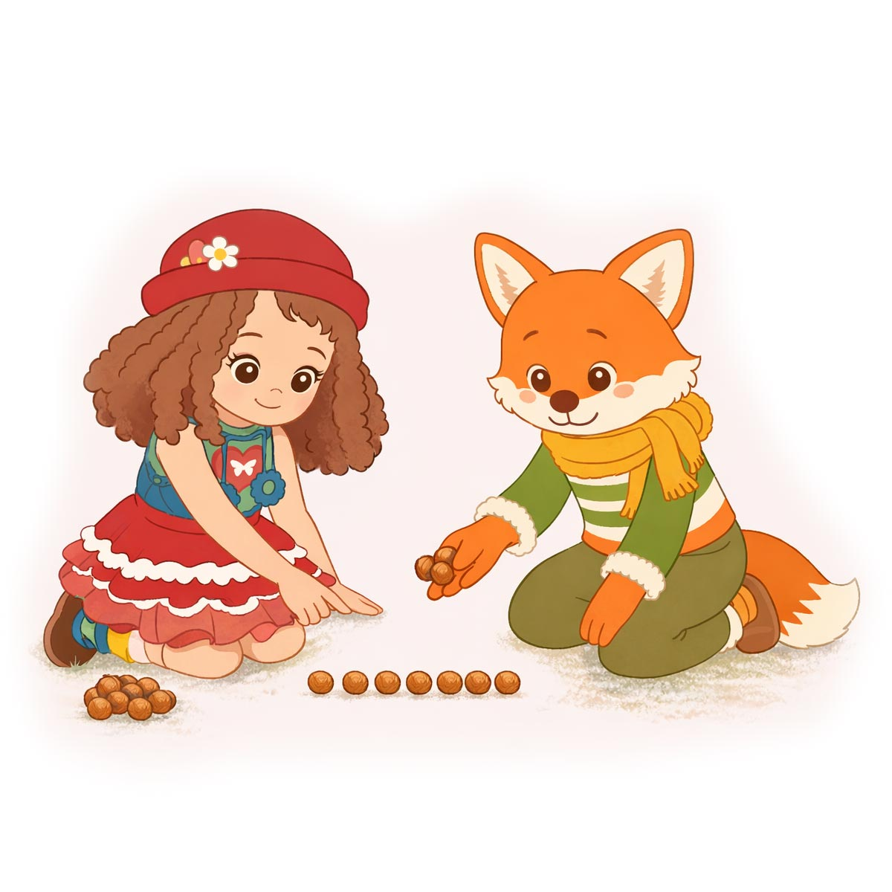
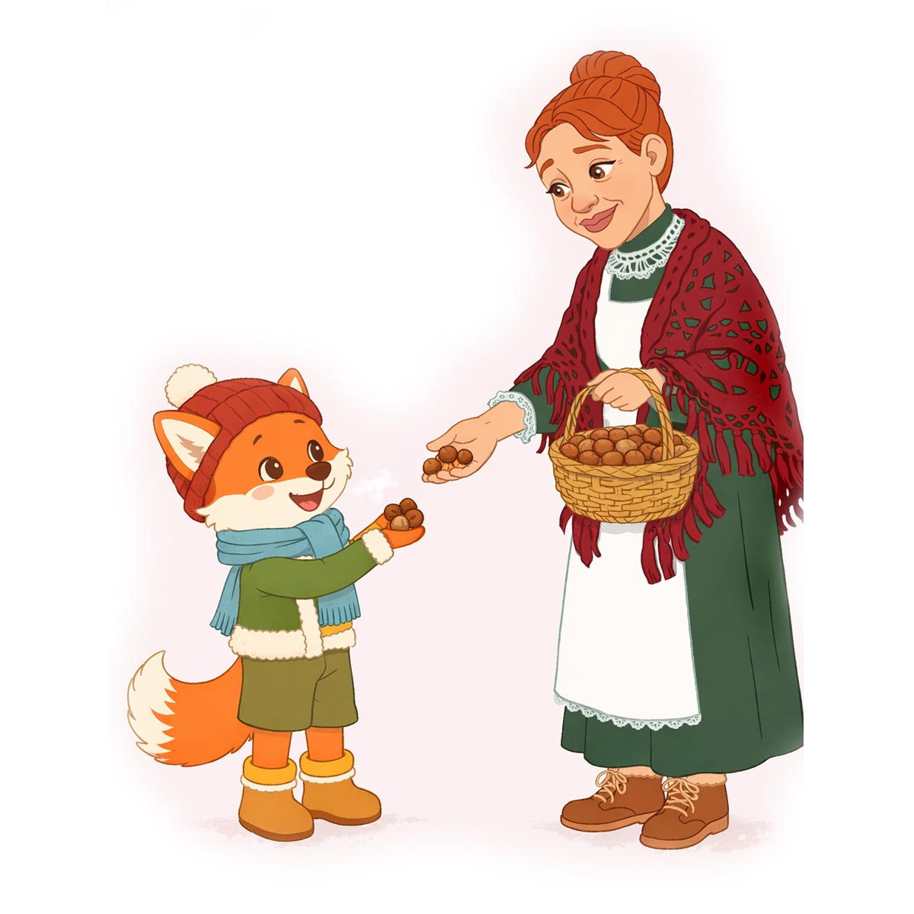
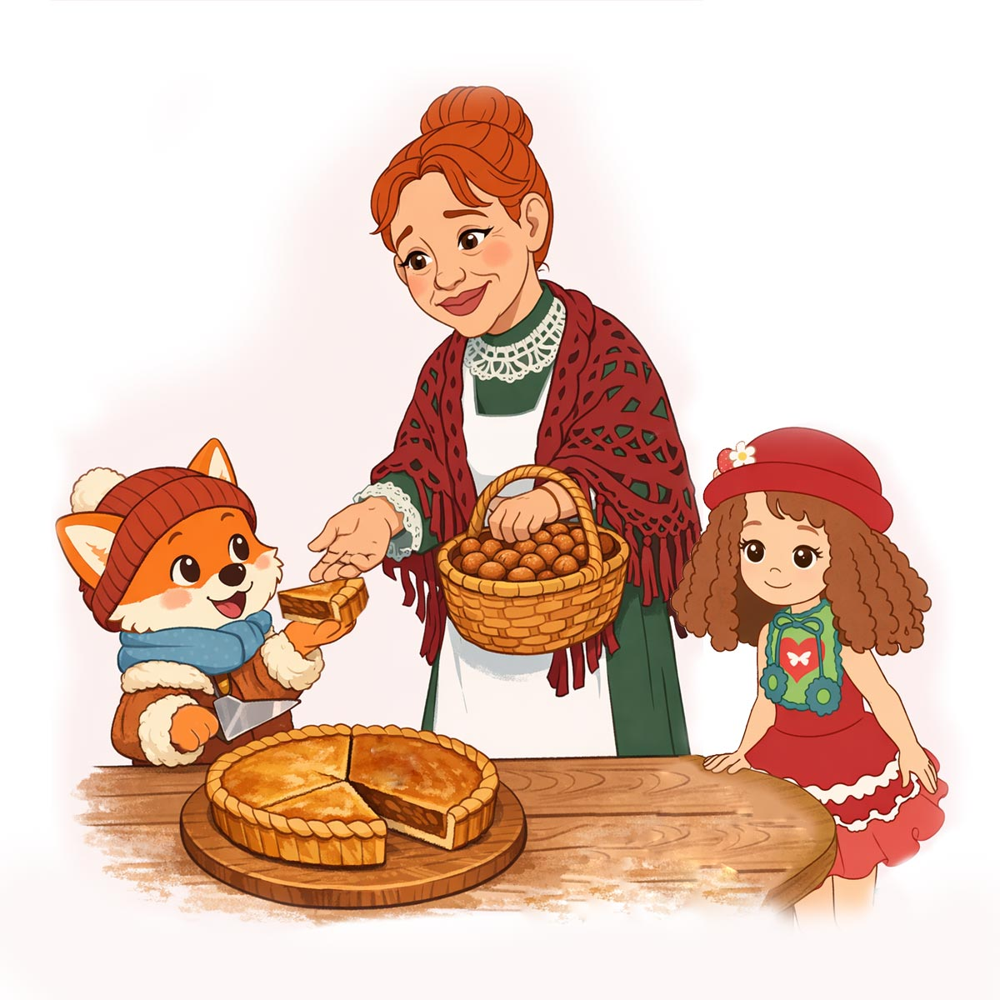
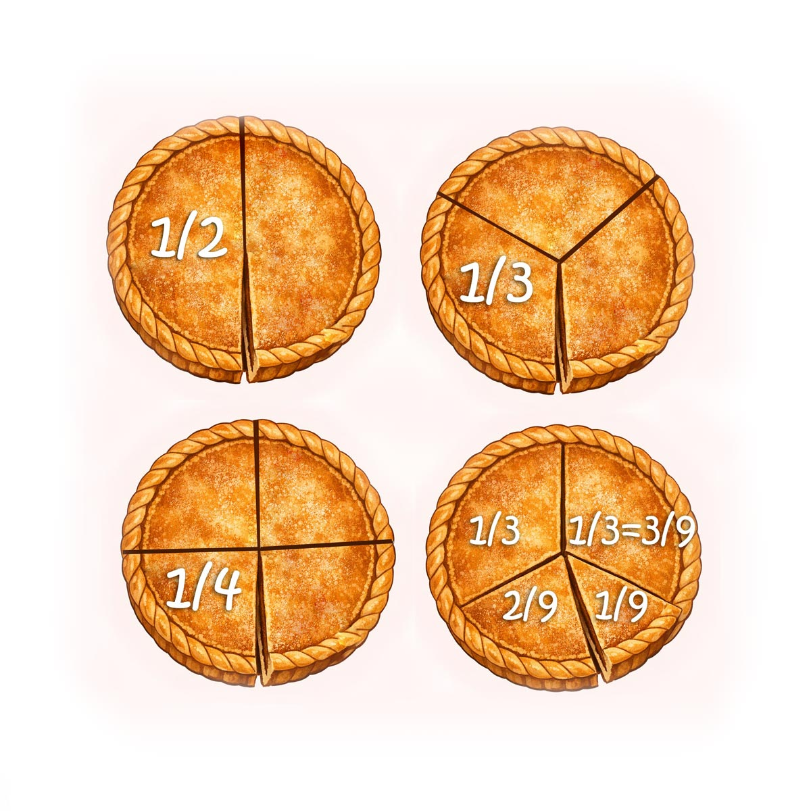
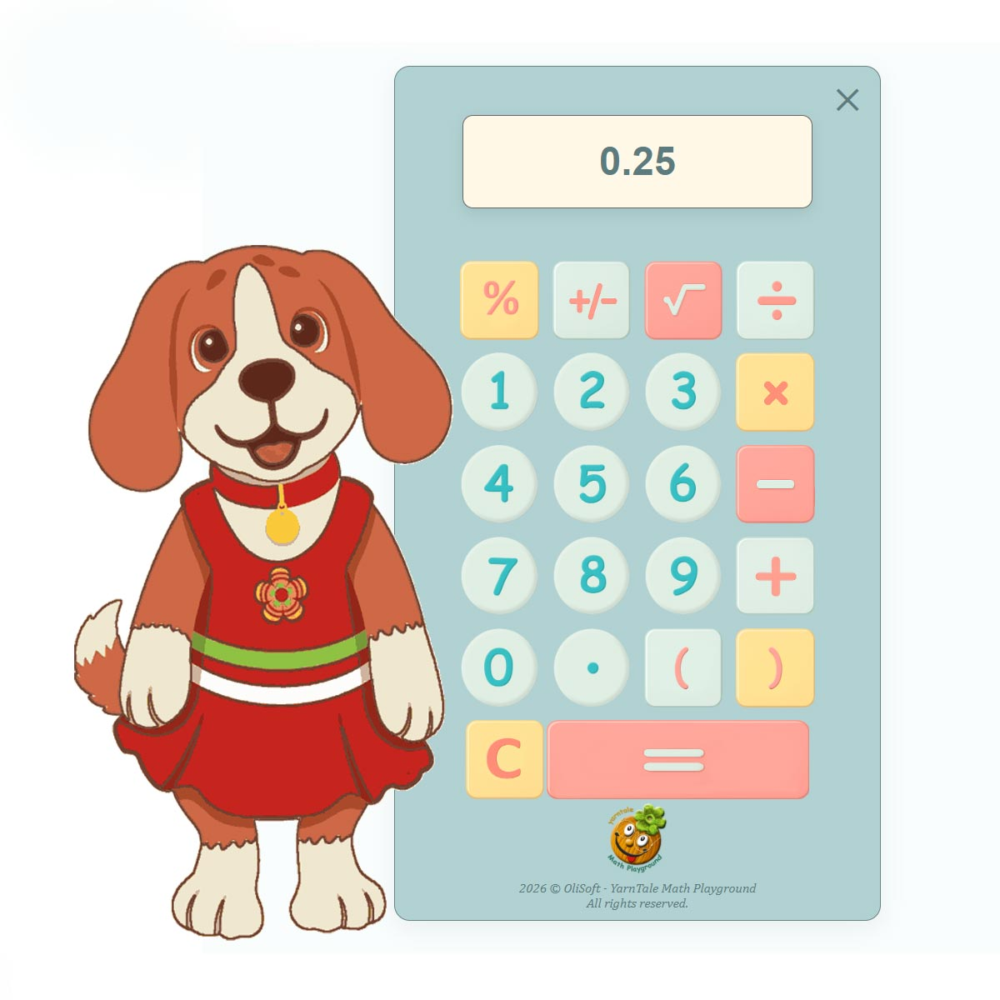

В один тихий вечер Настенька сидела на крылечке, а рядом устроились Лиуми и Пиппа.
Пиппа держала в лапках дудочку, но играть не спешила — она смотрела на странные знаки, которые Настенька выводила в своей тетрадке. Она решала примеры по математике.
— Это что, буквы? — спросила Пиппа.
— Нет, — улыбнулась Настенька. — Это ЦИФРЫ. Они как ноты: каждая сама по себе — просто знак.
— А вот это? — Лиуми показал на длинную запись: 2316.72.
— А это уже ЧИСЛО, — сказала Настенька. — Цифры собрались вместе, чтобы записать число, как буквы собираются в слова, а ноты — в мелодию.

Пиппа кивнула:
— Как в музыке. Одна нота — звук, а много нот — песня.
Настенька высыпала горсть орешков.
— Раз, два, три… — пересчитывал Лиуми.
— Это НАТУРАЛЬНЫЕ ЧИСЛА, — сказала Настенька. — Те, что мы используем, когда считаем предметы. Они помогают нам считать то, что можно потрогать, то, что есть. Они положительные и живут справа от нуля на числовой оси.

— Но бывают и другие числа, — добавила она. — Например, отрицательные. И они совсем не «плохие». Их ты увидишь на числовой оси слева от нуля.
— Я уже знаю! — закричал Лиуми.
Пиппа поёжилась.
— Да, зимой бывает холодно, минус пять, минус десять…
— Вот именно, — кивнула Настенька. — Отрицательные числа показывают, что чего-то стало меньше нуля. Как температура, когда мороз.
— А ещё, — вспомнил Лиуми, — когда я одолжил у тёти Поли три орешка — это тоже минус! Потому что я должен буду их отдать.
— Да, — засмеялась Настенька. — Ты ушёл в «долг», в отрицательное число.

Целые числа — вместе и плюсы, и минусы:
— Натуральные и отрицательные — это всё ЦЕЛЫЕ числа, — объяснила Настенька. — Они как дорога: вправо идут положительные, влево — отрицательные, а посередине стоит НОЛЬ.
Настенька принесла и поставила на стол пирог.
— Если разделить его на троих — каждый получит одну треть, дробь 1/3.

— А если на двоих? — спросила Пиппа.
— Тогда кусочек будет 1/2.
— А если на четверых? — Лиуми наклонился ближе.
— Ну сам догадайся, — улыбнулась Пиппа. — То, на сколько частей мы разделили, называется «знаменателем», и мы пишем его внизу, а то, сколько частей возьмём, называется «числителем», и он вверху — вот так 1/4.

— А на столе сколько осталось? — спросила Настенька.
— Три кусочка! Значит, это 3/4! — быстро ответил Лиуми.
— Всё правильно, — улыбнулась Настенька.
— Постойте, — тихонько сказала Пиппа и положила на стол маленький детский калькулятор. — Если пирог разделить на двоих, то калькулятор показывает 0.5. А если на четверых, то он показывает 0.25. Неужели мой калькулятор сломался?

— Нет-нет, Пиппа, твой калькулятор не сломался, не бойся. Калькулятор показывает нам десятичные дроби. Это такие дроби, в знаменателе которых стоит 10, или 100, или 1000, или ещё больше. Просто так удобно.
— Смотри, — продолжила Настенька, — если я возьму и разрежу пирог на 10 частей, то половинка пирога будет 5 кусочков, или 5/10. Значит, 1/2 = 5/10 = 0.5. Вот это и показал калькулятор.
— А четыре кусочка? — спросил Лиуми.
— Тоже можно, — улыбнулась Настенька, — но здесь мне придётся делить пирог на 100 частей и взять 25 этих крошечных кусочков. Это долго, я не стану резать пирог, просто поверь мне. Но если хочешь, проверь сам — раздели на 100 частей вот эту бумажную ленту и раздели кусочки на четверых. У каждого окажется по 25 отрезков.
1/4 = 25/100, что записывается 0.25 — это тоже десятичная дробь.
— Но не всякую дробь можно записать как десятичную точно, — добавила Настенька. — Например, 1/3. Если 1/3 попробовать записать десятичной дробью, то она окажется бесконечно длинной. Вот попробуй сосчитать на калькуляторе:
1/3 = 0.333333333333333333333333333333333333333333333333333333333333… и так далее.
Она никогда не закончится! Или
7/9 = 0.7777777777777777777777777777777777777… и так далее
— Но такая точность нам не нужна, — сказала Настенька. — Поэтому мы можем записать дробь приближённо: 1/3 ≈ 0.333, или 1/3 ≈ 0.33, или даже 1/3 ≈ 0.3. Это называется «округлить число». Посмотри, знак равно стал волнистым — это значит, что это его приближённое значение. Это удобно.
— Вот давай теперь повторим, какие числа мы уже знаем: натуральные, целые, дробные. Все вместе их называют РАЦИОНАЛЬНЫМИ.
Пиппа поморщилась:
— Это всё так сложно, столько названий…
Но Лиуми перебил её:
— Нет, Пиппа, это же интересно и очень полезно знать. Вот теперь я могу так просто рисовать эти дроби на числовой оси, сравнивать их. Просто так удобно.
Лиуми достал тетрадку, в которой он рисовал числовую ось и ставил на ней числа, и добавил несколько новых точек, аккуратно подписав их.